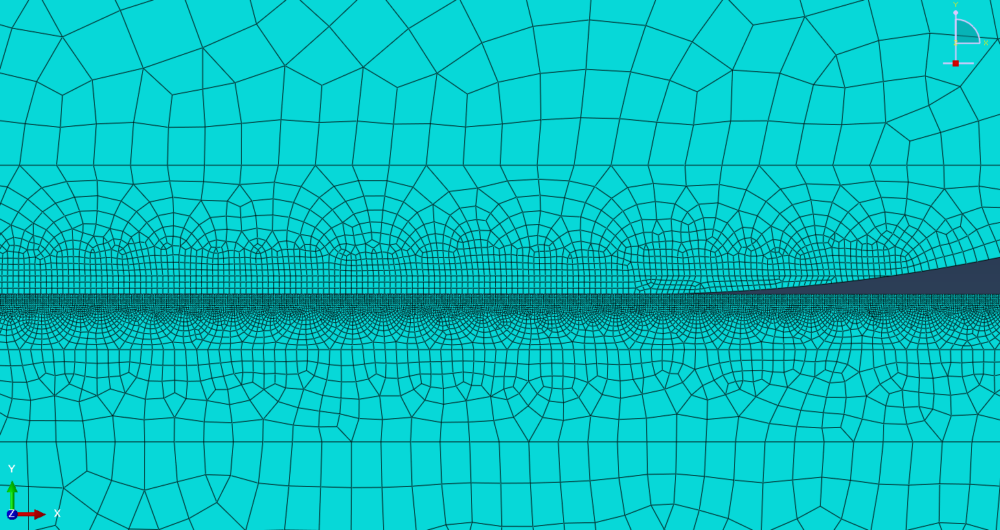
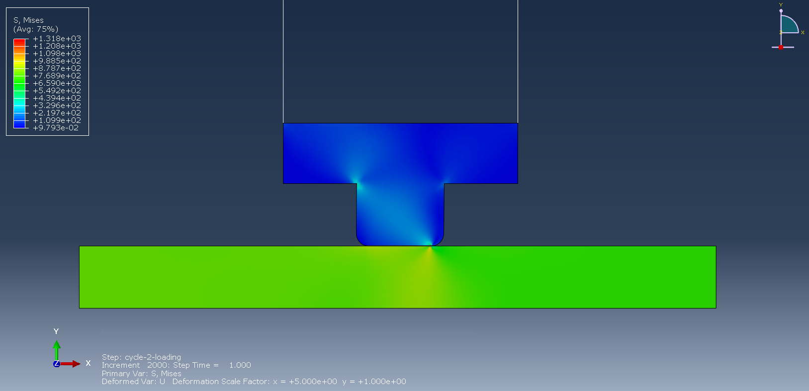
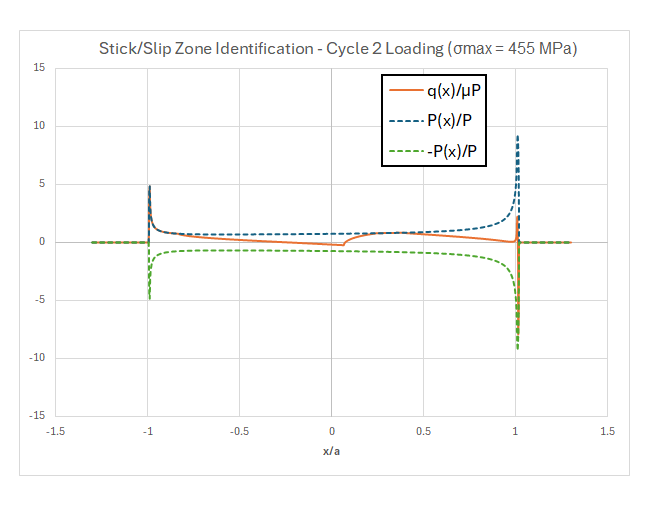

Project Overview
This research aims at developing a comprehensive life prediction model for fretting wear-fatigue interactions in turbine blade and disk interfaces, addressing critical structural integrity challenges posed by corrosion pits and micro-cracks in high-performance jet engines. Sponsored by Pratt & Whitney and conducted at Georgia Institute of Technology, the project targets commercial jet engines to address FAA lifing risks, reduce operating costs, and substantially improve turbine reliability.
Research Objective
Establish predictive methodology for fretting fatigue life assessment under multiaxial loading conditions with minimal wear and negligible gross slip.
Technical Approach
2D plane strain FEA models incorporating rig compliance and multi-step cyclic loading to simulate actual disk slot edge geometry and contact mechanics.
Key Deliverable
Calibrate FEA methodology enabling pre-test life predictions and lab-based validation for FAA certification and reliability improvement.
FEA Model Development & Meshing Strategy
- Employs 2D plane strain FEA model with multi-scale meshing approach
- Transitions from macro-level boundary conditions to highly refined micro-level resolution at contact interface
- Captures complex stress concentrations and displacement fields critical for fretting fatigue analysis
- Enables accurate evaluation of stick-slip regions under combined normal and tangential loading
- Operating conditions: contact pressures 34.5-138 MPa, specimen stresses up to 900 MPa
- Refined mesh resolution optimizes computational efficiency while maintaining high accuracy in critical zones

Macro-Micro Scale Meshing of Wear Pin and Specimen Contact Interface
Contact Mechanics & Stress Distribution Analysis
- Reveals peak contact pressures of approximately 138 MPa at interface
- Identifies significant stress concentrations at contact edges—primary crack nucleation sites
- Simulates multi-step loading with two complete fatigue cycles at R=0.1
- Demonstrates stabilized contact response by second cycle for reliable life predictions
- High stress concentrations correlate directly with observed crack initiation locations
- Validates computational approach for fretting fatigue prediction under multiaxial loading
- Benchmarked against experimental data from Ni/Co-base superalloys at temperatures up to 650°C

Von Mises Stress Distribution in Contact Region
Fretting Zone Characterization & Life Prediction Framework
- Identifies distinct stick and slip zones within the contact region
- Stick zone: minimal tangential displacement with high shear traction
- Slip zone: cyclic relative motion generating wear debris and surface damage
- Crack initiation occurs at stick-slip boundary where stress concentrations maximize
- Critical transition zone combines high normal pressure with oscillating shear stress
- Enables application of non-local SWT criterion for life assessment
- Provides framework for accurate fretting fatigue life prediction under service conditions

Stick-Slip Zone Identification and Stress Concentration Analysis
Technical Skills & Competencies
Finite Element Analysis
- 2D Plane Strain Modeling
- Contact Mechanics Simulation
- Multiaxial Loading Analysis
- Cyclic Plasticity Modeling
- Macro-Micro Scale Meshing
Materials & Mechanics
- Ni/Co-Base Superalloys
- Fretting Fatigue Phenomena
- Oxidation Mechanisms
- High-Temperature Behavior
- Crack Initiation Analysis
Life Prediction Methods
- SWT Criterion Application
- Non-Local Approaches
- Fatigue Life Assessment
- Wear-Fatigue Interactions
- Validation & Calibration
Experimental Design
- Test Rig Development
- Specimen Geometry Design
- Boundary Condition Setup
- Compliance Characterization
- Literature Benchmarking
Aerospace Applications
- Turbine Blade/Disc Interfaces
- HPT Engine Components
- FAA Certification Requirements
- Reliability Engineering
- Cost-Risk Optimization
Research & Analysis
- Computational Modeling
- Results Validation
- Technical Documentation
- Industry Collaboration
- Knowledge Transfer